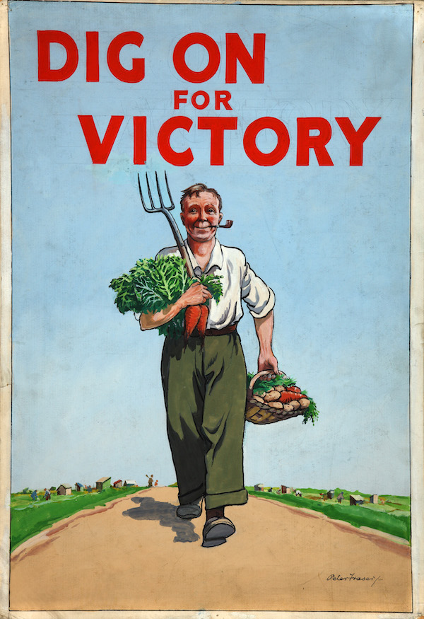

Background Doc Redden grew up in a small farming community in southern Indiana that came through the Great Depression relatively unscathed thanks to their resilience and ties to the earth. He knew the importance of sharing what you have with those who had less, so that all could have more. In his lifetime, he would see the spread of electricity (still very rare in rural farming communities when he was born) and the motor vehicle and the rapid advancement of medicine and other technology. A seed had been planted in him to solve problems and to help, and, in all things, he planted a seed (and maybe a few flower bulbs). Throughout his life, Doc Redden stayed true to his roots, picking strawberries to put himself through med school and later maintaining a farming operation that transitioned from tobacco to soy beans and cattle and chickens to keep his love of the land alive. In fact, he would sometimes use his back office in Covington to hatch the eggs! He never took an appointment his whole career but patients would sign in and then go when their name was called. In his office, he would share stories about dandelion wine and his work on the farm and listen to his patients' stories and issues. He was a problem solver and did not point blame but focused on solutions and offered advice. For the children, at the end of each appointment, he would pull out a lollypop from the drawer and hand it to them on their way out. If you couldn't pay, it was not a problem. He could find a solution.
Next Chapter Brian - Sharing stories is what my grandfather loved to do. He understood the power of listening also as a valuable medicine. He served the Covington community as a family doctor for 6 decades until his retirement at 90 years old. For some families, he might even have delivered two or three generations of their families into life or served as their primary care giver until he retired, 57 years at this office. He had a deep belly laugh and if he liked something, he thought it was just "wonderful, wonderful, wonderful". If he saw something being done wrong, he knew how to fix it and thought it was most important to solve a problem than waste time worrying about it or pointing blame. The Initial Build Out We started the garden with the reach goal of filling 24 plots in our first season! But as word spread, we quickly realized that there was such an unmet need and interest in gardening that we had to bite the bullet and buy enough wood to make an additional 10 plots. We appreciate the help of the Center for Great Neighborhoods for the ability to reuse some materials and funding from one of the closed gardens to jump start this one. In fact, at the creation of the garden, three community gardens had been officially closed within the last year. Before we ever started planting for the first season, we had already all of the 34 plots reserved (technically 33 full 8 ft x 8 ft plots and two half sized plots), mostly individuals and families, as well as the Eastside Child Development Center (infant to preschool age students) directly across the street and the Teenage Program from the Covington branch of the Kenton County Library. The money for the soil was donated by Greenery33 as part of their initial fundraiser, and, with that great soil, the plants flourished. My brother Mark and I built a fence, and divided the flowers from grandpa's existing flower beds around the property and along the fence. Neighbors helped us plant, weed, and mulch and together we planted fruit plants such as blueberries, raspberries, blackberries, currants, gooseberries and honeyberries along the fence, along with vegetables such as peppers, tomatoes, chard, kale, collard greens. Later, as things became ready to harvest, we posted bilingual signage encouraging our neighbors to partake of the bounty. And they did! So many people have shared stories of their love of Doc Redden and the appreciation of the garden for its beauty and the benefit of the food. Food is now also being donated to Be Concerned, our local food pantry, to help bring it into the homes of those in need. Food is a unifying thing; everyone eats. But culture and society have been formed around seasons and growing and harvesting cycles. This can be something we often forget in our modern society, but something we are also intrinsically called to remember.  We're doing big things! Making the best use of space is our desire. With a limited amount of horizontal space, sometimes you just need to grow tall. These sunflowers provide the benefit of beauty, whimsy, pollinator food, and later bird food through their seeds. We seek to reconnect our neighbors with the land, and with each other, to make them again the protagonists of their stories. Our vision is simple: to grow beauty alongside vegetables, people alongside community, and stories alongside knowledge. We do this by providing space, and knowledge, and companionship, and something as little as a seed. It starts with a seed A garden needs very few things; sun, earth, water are essential but a plant starts from a seed. By providing this at no cost, we were able to start many gardens, both in our gardening space and beyond. In our first year, we were able to get donated seeds from some seed companies as well as the Ohio Valley Seed Swap that gave us a very generous donation of seeds that we were able to share and use to stock our library. Ideally over time, we will be able to harvest our own seeds and keep local heritage and naturalized seeds and their associated fruits in our food supply. This photo was taken at our kick off festival in April right before our season officially started. We will be having an end of season Harvest festival to bring the community as a whole together again and to reveal the mural which will be completed on the old office building (more details to be revealed), through funding by the Creative Community grants through the Center for Great Neighborhoods and ArtsWave. From the seeds grew many wondrous things — community, conversation, knowledge sharing and learning, as well as so many plants. And in each plot, we had stake holders who grew their food for themselves and their families. And quickly realized how much excess they had to share and trade, and donate. Pictured here are the three sisters which had been traditionally used by many Native American communities, and an example of understanding natural processes and using them to their advantages. The eldest sister corn grows strong and tall and provides sport as a trellis to the beans, which help to make nitrogen available in the soil for the squash and corn. The squash, referred to as the middle sister, grows along the ground, serving as a living mulch to keep the moisture in the soil and the weeds from growing. In this version, squash and corn is grown in a checkerboard pattern on little hills to promote strong growth. Beans are planted later when the corn is of a substantial size. This in turn is a model for our community and a chance to share a story.